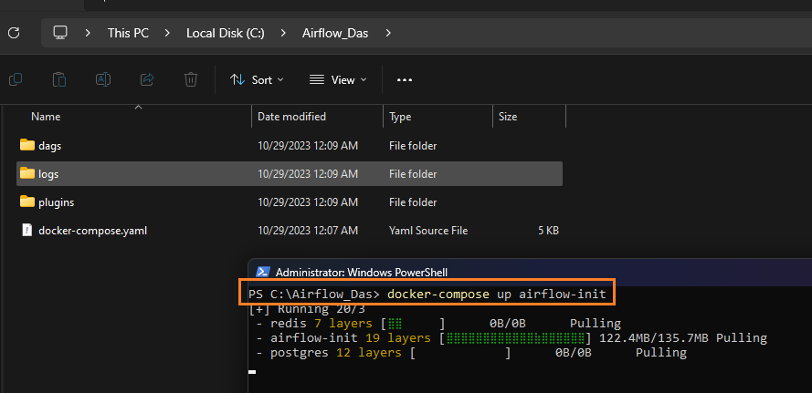

{kind=link}
Apache Airflow on Windows Docker¶
Here, I will show you how to install Airflow on a Docker container using two methods:
Method 1: Simple Development Setup¶
- Single Container: This method runs everything inside one container. It includes all Airflow services like the scheduler, webserver, worker, etc., bundled together.
- Database: Uses SQLite as the database
- Docker Volume: A Docker volume is used to store data.
Method 2: Full Production Setup¶
- Number of Containers: This method sets up seven containers. These include:
- Scheduler: Manages task scheduling.
- Webserver: Provides the Airflow user interface.
- Worker: Executes the tasks.
- PostgreSQL: Used as the database to store metadata.
- Redis: Acts as a message broker between the components.
- Triggerer: Manages task triggering.
- Flower: For monitoring the Celery workers.
- Local Folders: Data is stored in local(laptop) folders.
Method 1 - Simple Development Setup¶
Download Airflow Docker Image¶
Run the following command in your command prompt or power shell to pull the latest Airflow Docker image: docker pull apache/airflow:latest

Create a Docker Volume¶
Execute this command to create a Docker volume named airflow-volume for data persistence: docker volume create airflow-volume
Initialize Airflow Database¶
Initialize the Airflow database using the following two commands:
docker run --rm --network dasnet -v airflow-volume:/opt/airflow apache/airflow:latest users create --username airflow --firstname FIRST_NAME --lastname LAST_NAME --role Admin --email admin@example.com --password airflow
Note: I use a network dasnet. Hence --network part. You can totally remove the --network.
Start the Airflow Webserver¶
To start the Airflow webserver, use this command:
docker run -d --name airflow --network dasnet -p 8080:8080 -e AIRFLOW_UID=50000 -v airflow-volume:/opt/airflow apache/airflow:latest webserver
{kind=link}
Note: I use a network dasnet. Hence --network part. You can totally remove the --network.
Login into Airflow UI¶
To login open http://localhost:8080 and enter credential: airflow/airflow
Method 2 - Full Production Setup¶
Create Required Folders¶
- Create a base directory, anywhere, for Airflow, e.g.,
C:\Airflow_Das. - Within this directory, create three subdirectories:
dags,plugins, andlogs.
Download the Docker Compose File¶
- Save the
docker-compose.yamlfrom link toAirflow_Dasfolder.

Note on docker-compose.yaml¶
- When this article was written, the Airflow image used was
apache/airflow:2.7.2. You can find the relevantdocker-compose.yamlfile here. - If the link doesn’t work, visit the Apache Airflow site and search for the latest
docker-compose.yaml.
Initialize and Run Airflow¶
- Open PowerShell(with admin priv) and cd to
Airflow_Das - Run command:
docker-compose up airflow-init - Then run command:
docker-compose up You can see the logs cascading down your PowerShell window. Wait a few seconds and then you can safely close the window.
You can see the logs cascading down your PowerShell window. Wait a few seconds and then you can safely close the window.
{kind=link}
Verify the Installation¶
-
On Docker Desktop, look for a container named
Airflow_Das, containing seven subcontainers.
{kind=link}
Note: airflow-init-1, init container will exit after initialization. This is the expected, normal, beheviour. Don't panic.
- Open
localhost:8080in a web browser. - Log in with the username and password:
airflow.
Components Installed¶
The table shows some important components of our Airflow setup.
| Component | What It Does | Environment Variables | Folders | Ports | Command | Locations Inside Container |
|---|---|---|---|---|---|---|
| Webserver | The main part of Airflow where you can see and manage your workflows, logs, etc. | AIRFLOW__CORE__EXECUTOR (sets the type of executor), AIRFLOW__WEBSERVER__WORKERS (number of workers) |
./dags:/opt/airflow/dags, ./logs:/opt/airflow/logs, ./plugins:/opt/airflow/plugins |
8080:8080 |
airflow webserver |
/opt/airflow (inside container) |
| Scheduler | Handles the scheduling of workflows, making sure tasks run on time. | AIRFLOW__SCHEDULER__DAG_DIR_LIST_INTERVAL (how often to check the DAG folder) |
./dags:/opt/airflow/dags, ./logs:/opt/airflow/logs, ./plugins:/opt/airflow/plugins |
N/A | airflow scheduler |
/opt/airflow |
| Worker | Runs the tasks in the workflows. Needed when using CeleryExecutor. | AIRFLOW__CORE__EXECUTOR (CeleryExecutor), AIRFLOW__CELERY__BROKER_URL (URL for Celery broker) |
./dags:/opt/airflow/dags, ./logs:/opt/airflow/logs, ./plugins:/opt/airflow/plugins |
N/A | airflow celery worker |
/opt/airflow |
| Postgres | The database that stores all the Airflow information like DAGs, task statuses, etc. | POSTGRES_USER=airflow, POSTGRES_PASSWORD=airflow, POSTGRES_DB=airflow |
postgres_data:/var/lib/postgresql/data |
N/A | postgres |
/var/lib/postgresql/data |
| Redis | A messaging service that helps workers communicate with each other when using CeleryExecutor. | REDIS_PASSWORD=redis_password (if you want to secure it) |
redis_data:/data |
N/A | redis-server |
/data |
| Flower | A tool to monitor and manage Celery workers and tasks. | FLOWER_BASIC_AUTH=admin:password (to secure it) |
N/A | 5555:5555 |
flower |
N/A |
Reference¶
© D Das
📧 das.d@hotmail.com | ddasdocs@gmail.com